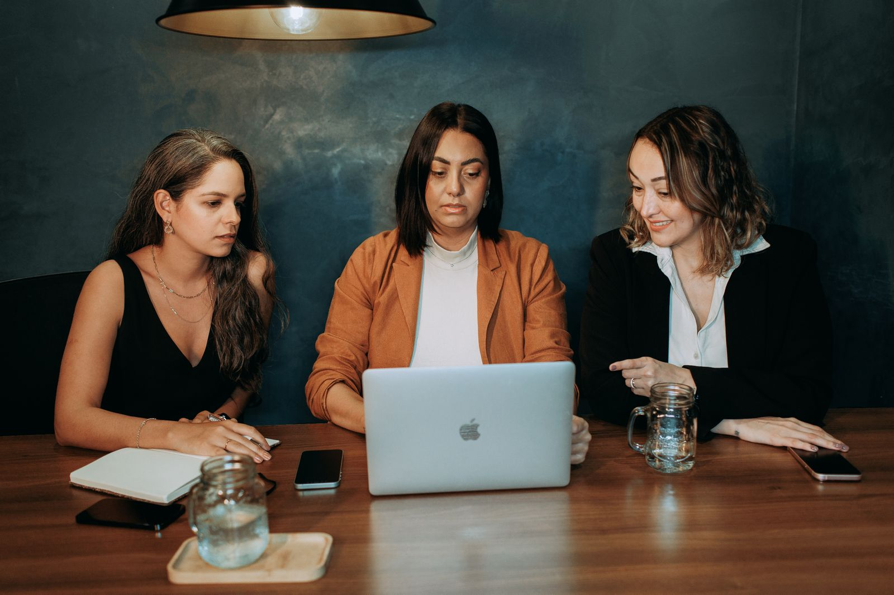
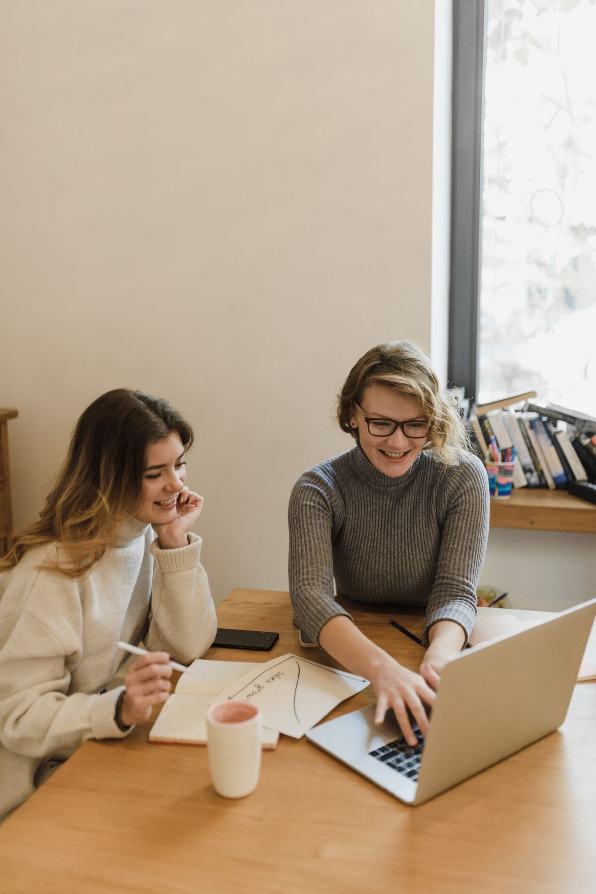
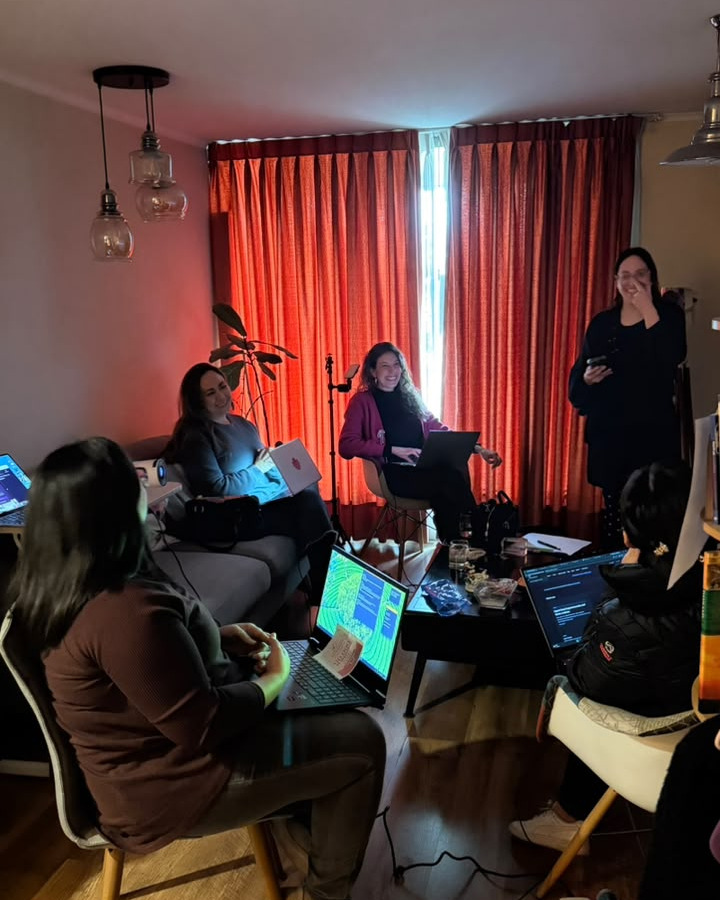
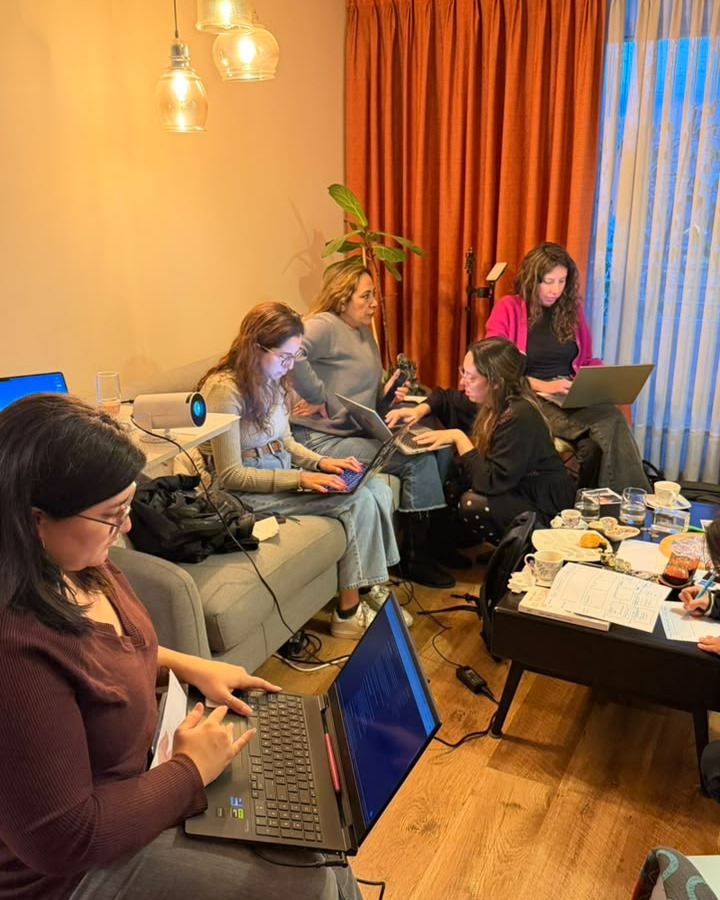
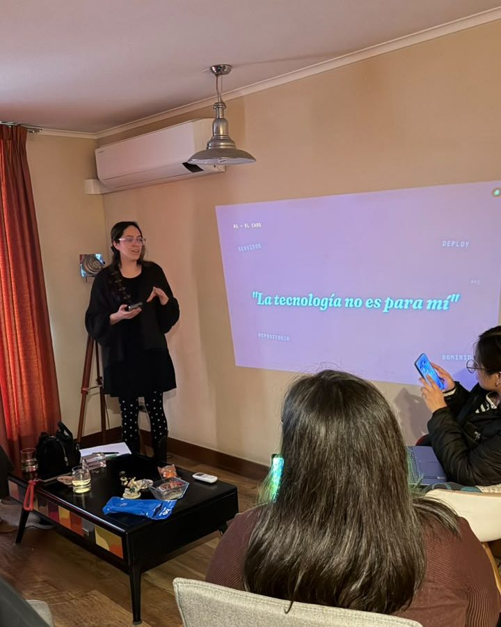
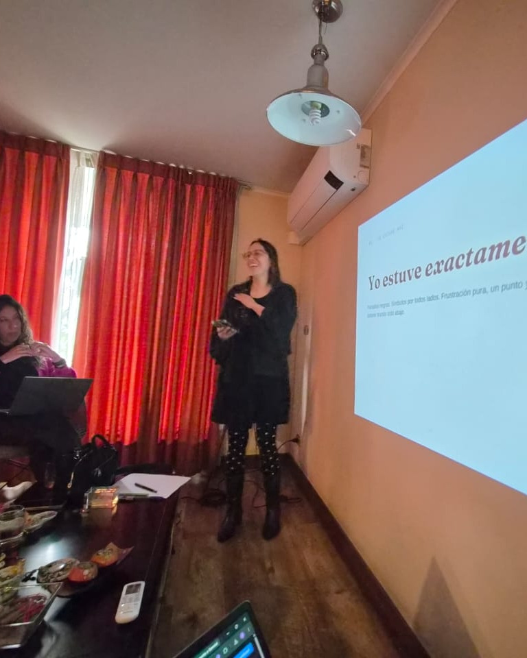

Acceso
Acercamos la tecnología con un lenguaje claro y sin barreras innecesarias.
Tecnología · Comunidad · Oportunidades
Reducimos barreras de acceso a la tecnología y creamos oportunidades de desarrollo personal, profesional y económico para mujeres, mediante experiencias prácticas, presenciales y comunitarias.


Nuestro propósito
Queremos que más mujeres puedan comprender, utilizar y apropiarse de las nuevas tecnologías para impulsar sus ideas, fortalecer su trabajo, desarrollar proyectos y participar activamente en la construcción del futuro.
Acercamos la tecnología con un lenguaje claro y sin barreras innecesarias.
Cada experiencia transforma lo aprendido en un resultado concreto.
Aprendemos acompañadas, compartiendo conocimientos, experiencias y oportunidades.
Fortalecemos capacidades que pueden ampliar las posibilidades personales, profesionales y económicas.
Cómo funciona
“No se trata solamente de aprender tecnología. Se trata de descubrir qué puedes hacer con ella.”
Programas
Cada programa aborda una necesidad concreta y acompaña a las participantes desde el primer paso hasta un resultado real.
Nuestro primer taller ya tiene convocatoria abierta: «Crea tu primer agente con IA», cinco horas para descubrir qué necesita tu negocio y construir el agente que responde a esa necesidad. Ver el taller.
Próximos encuentros
Publicaremos aquí las próximas fechas, ciudades, facilitadoras y condiciones de participación.
Impacto
Nuestro modelo conecta el acceso a la tecnología con resultados propios, redes y nuevas capacidades que sostienen la autonomía.
El bootcamp de creación de páginas web con inteligencia artificial fue nuestro punto de partida: ahí probamos una forma de enseñar práctica, presencial y acompañada, y de esa experiencia salieron los programas que hoy ofrecemos.
Comunidad
Los encuentros crean espacios donde las participantes pueden preguntar, experimentar, compartir conocimientos y construir relaciones que continúan después de cada programa.
Nuestra experiencia
En julio realizamos el primer bootcamp de creación de páginas web con inteligencia artificial: una jornada completa, en grupo pequeño, cada una trabajando sobre su propio proyecto.




Lo que dicen
Profesoras y mentoras
Reunimos conocimientos y trayectorias diversas para acompañar cada programa con cercanía, claridad y experiencia práctica. Las dos fundadoras de esta iniciativa lideran empresas respaldadas por Start-Up Chile, en la generación BIG 11.
¿Tienes experiencia que pueda abrir nuevas posibilidades para otras mujeres?
Quiero sumarme como profesora o mentoraContacto
Déjanos tus datos y te escribimos cuando abramos la próxima convocatoria. También puedes sumarte a la red de profesoras y mentoras desde este mismo formulario.
¿Vienes de una organización? El recorrido para fundaciones, empresas, municipios e instituciones está en su propia página.